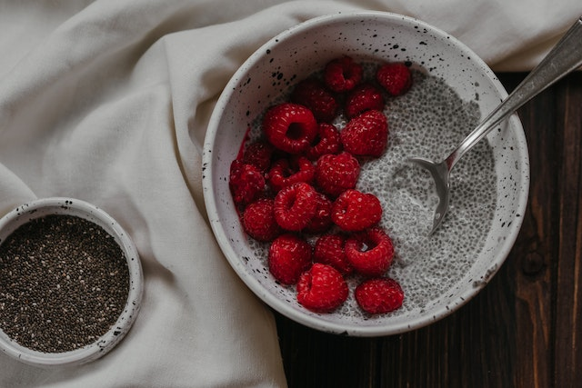

Chia Pudding

Image from Polina Kovaleva on Pexels
Description
Chia pudding is a super-tasty treat made with only 2 basic ingredients. It's sweet, creamy, and highly nutritious as chia seeds are rich in omega-3 fatty acids, protein, fibre, vitamins, and minerals Kulczyński et al., 2019. This pudding is my go-to breakfast recipe but it can also be enjoyed as a snack or dessert.
Ingredients
Optional add-ins
Instructions
There is no cooking involved as chia seeds absorb up to 10x their weight in liquid. Simply soak the chia seeds in your choice of milk and allow the seeds to tranform the mixture into a pudding consistency similar to tapioca.
- In a small bowl. mash banana until smooth.
- Add chia seeds and milk of choice to the mashed banana.
- (Otional) slowly add collagen powder to the bowl while stirring the mixture to prevent clumping.
- Add vanilla extract and honey to liking, and mix well.
- Cover the bowl and refrigerate for a few hours or overnight, making sure to stir the mixture every 30 minutes for the first hour to prevent seeds from sinking to the bottom and resulting in a running pudding.
- Serve pudding with fresh fruit, topped with cacao nibs or shaved chocolate.
Storing Leftovers
Chia pudding can be refrigerated for up to 5 days, making it a great meal prep idea for the week ahead. Best to store serving size portions in mason jars.